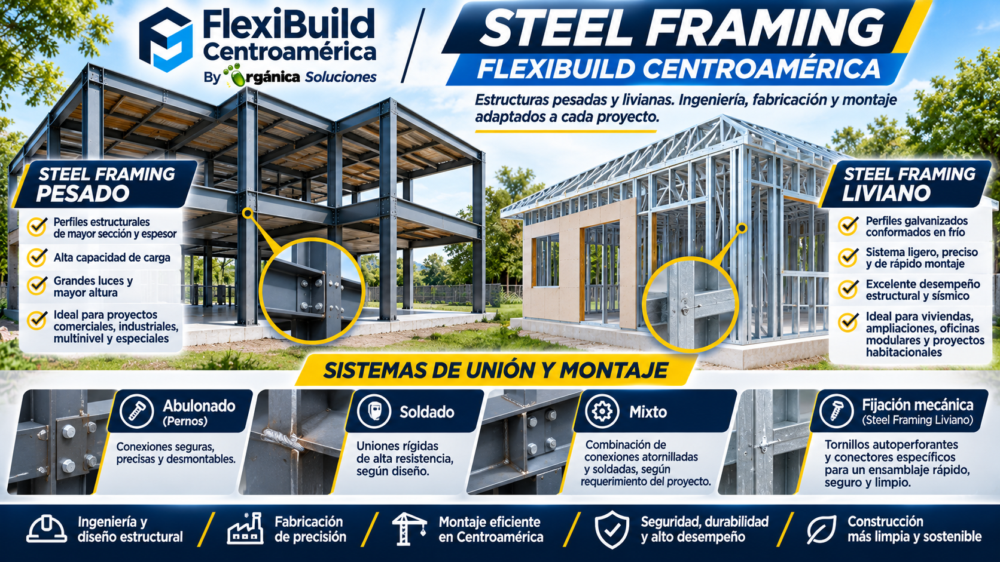

Homes and additions
Project-specific structures coordinated with layout, loads, enclosure and finishes.
Modular construction system
FlexiBuild offers Modular Steel Framing in Nicaragua, Costa Rica, Honduras and El Salvador to builders and construction professionals, and can quote project construction when requested. The system is based on tubular steel profiles with bolted, welded or hybrid connections according to project design. Light Steel Framing using C/U profiles may be considered separately. Logistics, technical review and local requirements are confirmed per project.

.png)
Design and coordination
Members, connections, bracing, anchorage and protective systems must be designed for geometry, loads, spans, height, use, exposure and applicable codes. Enclosures, insulation and finishes are selected for each project.
Profile dimensions, steel grades, joints, corrosion protection and fire performance require verifiable specifications and project design.
Building applications
This page covers building structures and spaces; see the dedicated page for mobile business units.
Project-specific structures coordinated with layout, loads, enclosure and finishes.
Modular spaces assessed against dimensions, intended use, access and site conditions.
Structures scoped according to the project design and local technical requirements.
The image above is an illustrative modular-housing reference, not evidence of a specific completed steel-framing project.
Share the country, intended use, dimensions and project stage.
Common questions
The system described here is primarily based on tubular steel profiles with bolted, welded or hybrid connections. Light Steel Framing using C/U profiles may be considered separately according to design requirements.
FlexiBuild develops projects from Nicaragua for regional markets. Availability, shipping, local requirements and scope are confirmed individually.